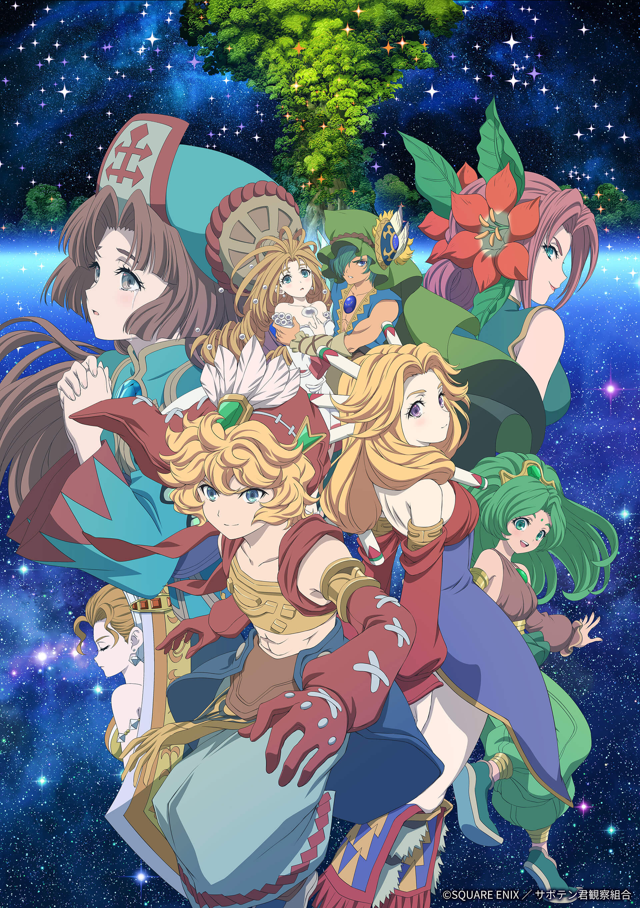

AnimeInterester
聖劍傳說 Legend of Mana -The Teardrop Crystal-

故事簡介
夏羅是個住在多米納小鎮附近的少年。有一天，他突然開始會在夢中聽到神祕的聲音，告訴他自己有使命在身。夏羅遇見了兩個「珠魅」。珠魅是在過去，由於鑲在胸前的寶石遭覬覦，而有許多人被殺害的種族。而現在，神祕的寶石小偷在世界各地接二連三掀起襲擊珠魅的事件。夏羅即將踏上一場圍繞著珠魅寶石的冒險旅程…
製作人員
原作：スクウェア・エニックス「 聖剣伝説 Legend of Mana 」
導演・劇本統籌：神保昌登
角色原案：HACCAN
角色設計：池上たろう
音樂：下村陽子
監製：ワーナーブラザースジャパン
聲優名單
夏羅：島﨑信長
瑟拉菲娜：早見沙織
瑠璃：梅原裕一郎
真珠姫：名塚佳織
巴德：三瓶由布子
可洛娜：下地紫野
爵爾：國立幸
仙人掌小弟：久保百合花
博伊德警部：辻親八
草人：森永千才
尼基塔：高木涉
瑞秋：高橋未奈美
馬克：保村真
努瓦勒：家中宏
小由佳：久野美咲
愛梅洛德：佐倉綾音
各集標題
| 話數 | 標題 |
|---|---|
| 1 | 青金石（前篇） |
| 2 | 青金石（後篇） |
| 3 | 紅寶石 |
| 4 | 藍寶石 |
| 5 | 白珍珠 |
| 6 | 祖母綠 |
| 7 | 鑽石 |
| 8 | 黑珍珠 |
| 9 | 紫翠玉 |
| 10 | 螢石 |
| 11 | 淚石（前篇） |
| 12 | 淚石（後篇） |